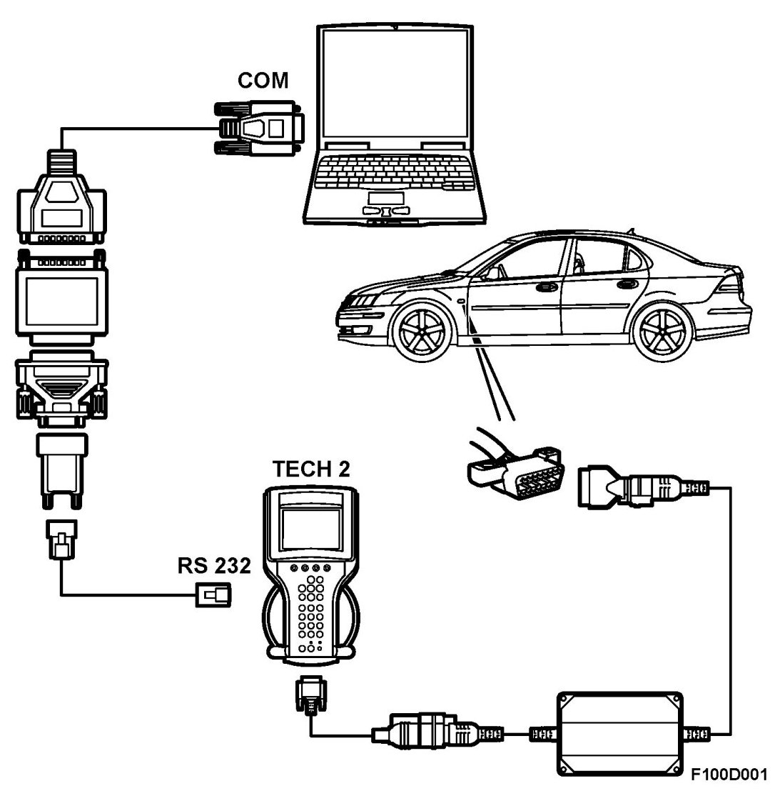

Repair and Diagnosis: Testing and Inspection
Service Programming
Read this first
Check that Tech 2 and TIS 2000 software in the computer to be used are the latest, correct version for SPS programming.

Brief description of SPS programming
- Request Info: Tech 2 - Requests information from the control module
- Reprogram: TIS 2000 checks and download new software to Tech 2.
- Download: Tech 2 - Downloads new software to the in-car control module.
- Add: Tech 2 - End-of-line programmes the in-car control module.
Tools for SPS programming
PC with TIS 2000 and WIS installed
Dongle and adapter
Tech 2 with 32 Mbits card
Tech 2's PC cable with RS232 adapter (max. 10 m long)
Battery charger
Needle-nose pliers
12 volt requirement for programming
The battery must be in good condition for successful SPS programming.
During SPS programming, all current consuming components and systems (lighting, ACC, audio system, seat heating, seat ventilation, radiator fans, etc.) must be switched off.
If SPS programming is interrupted, try again.
SPS programming
Follow the instructions given below carefully to ensure successful programming
1. Make a note of the VIN.
2. Connect the battery charger.
3. Connect Tech 2 to the data link connector and turn the ignition switch to ON.
4. Start Tech 2 and select Service Programming
Select: System (SPS)
Select: Request Info
Model year 2003
Vehicle type: 9-3 Sport
Group: ...
System: ...
Then follow the instructions on Tech 2.
5. Connect Tech 2 with a dongle to the COM port on the PC (flat cable).
NOTE: Tech 2 can remain connected to both the car and the PC throughout SPS programming. Go the "Start menu" in Tech 2.
6. Start the TIS 2000 software and select
Service Programming System (SPS).
Then select
Diagnostic Tool: Tech 2
Programming progress: Reprogram ECU
ECU location: Vehicle
Then follow the instructions on Tech 2 and select Next
Validate the VIN and select Next
Validate the vehicle data and select Next
Compare the software versions in "Selected ECU software" and "Current ECU software". If the selected software is newer, select Reprog.
7. (Once the software is uploaded, disconnect Tech 2 from the PC and reconnect it to the car.)
8. Switch off all heavy current consumers, e.g. lights, ACC, audio system, heated seats and seat ventilation.
9. Start Tech 2 and select Service Programming System (SPS).
Select: Program ECU
Follow the instructions on Tech 2. Start the TIS 2000 software.
10. Wait until SPS programming is completely finished. This will take roughly 5 - 20 minutes.
11. If programming is successful, Tech 2 displays that SPS programming is complete.
12. Return to the main menu in Tech 2 and select Diagnostics
Select Program ECU
Then select:
Vehicle type: 9-3 Sport
Group: all
All: Add/Remove
Add/Remove: Control Modules
Select: The ECU that is SPS programmed
Select: Add
Follow the instructions on Tech 2.
NOTE: You may, in certain cases, need to download "Security Access" from TIS 2000
13. Connect an exhaust extraction hose to the car and start the engine to check it works. Switch off the engine.
14. Before returning the vehicle to the customer:
Set the time and date on the SID. Activate the window pinch protection. (Tech 2 Diagnostics... Service menu).
15. Disconnect Tech 2 and replace the cover over the data link connector.